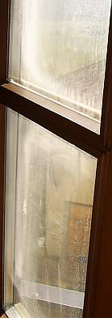
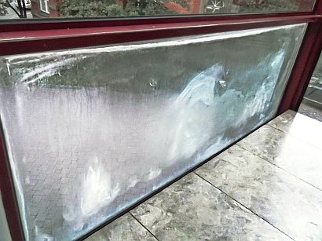
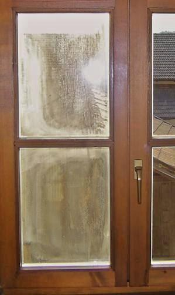
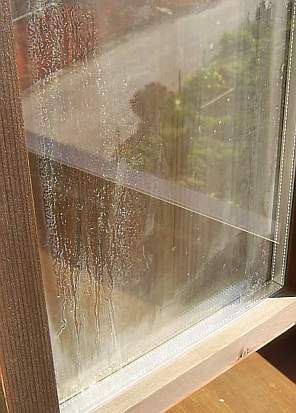
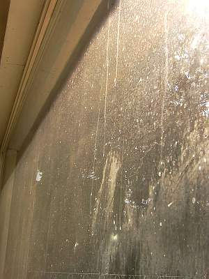
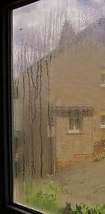
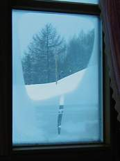
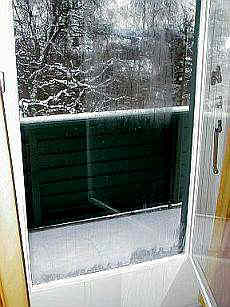
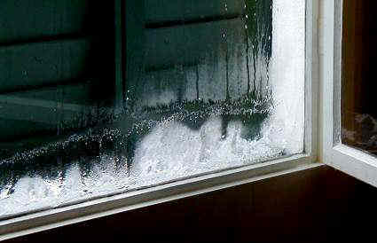
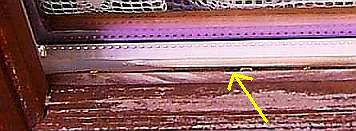

Wärmedämmung?
Wärmedämmung?
 Feuchte/Salz?
Feuchte/Salz?
 Heizung?
Heizung?
 Schimmelpilz wuchert?
Schimmelpilz wuchert?
 Altbautaugliche Verfahren und
Baustoffe
Altbautaugliche Verfahren und
Baustoffe "Schwitzt das Wasser auf dem Glas, wischte ständig ab, was naß" - so oder auch "Hastes Fensterglas voll Eis, denkste frostig: "Welch
ein ..." oder eher selten: "Nachtabsenkung und pottdicht? Frost sagt Dank mit Glaseisschicht" oder auch "Was am Fenster nicht drannäßt, garantiert Dir
Schimmelpest" oder so ähnlich stöhnen fast alle kondensatgeplagten Fensterbesitzer, denen der Winter den Tau auf die vorsätzlich herabgekühlten und dann die
Taupunkt-Temperatur unterschreitenden Scheiben und dann den Schweiß auf die Stirn treibt. Und das nicht nur bei Einfach-, Verbund- oder Kastenfenstern - nein,
das Scheibenkondensat bis hin zur Eisbildung und Eisblumen aus gefrorenem Schwitzwasser bzw. der Tauwasseranfall an den Rändern bzw. am Randverbund der
Fensterkonstruktion gehört inzwischen geradezu zum Kaltwetter-Standard bei fehlgeleiteten Energiegeizern im Winter allerorten. Trotz der von den
klammerbeutelgepuderten Klimaschutzpolitikern und ihren korrupten Klimaschutzscharlatanen (Schiller: Brodwissenschaftler) geweissagten globalen Erwärmung,
die seit zig Jahren in Wahrheit eine globale Abkühlung ist und an Ihrem versifften Fenster abzulesen.
"Schwitzt das Wasser auf dem Glas, wischte ständig ab, was naß" - so oder auch "Hastes Fensterglas voll Eis, denkste frostig: "Welch
ein ..." oder eher selten: "Nachtabsenkung und pottdicht? Frost sagt Dank mit Glaseisschicht" oder auch "Was am Fenster nicht drannäßt, garantiert Dir
Schimmelpest" oder so ähnlich stöhnen fast alle kondensatgeplagten Fensterbesitzer, denen der Winter den Tau auf die vorsätzlich herabgekühlten und dann die
Taupunkt-Temperatur unterschreitenden Scheiben und dann den Schweiß auf die Stirn treibt. Und das nicht nur bei Einfach-, Verbund- oder Kastenfenstern - nein,
das Scheibenkondensat bis hin zur Eisbildung und Eisblumen aus gefrorenem Schwitzwasser bzw. der Tauwasseranfall an den Rändern bzw. am Randverbund der
Fensterkonstruktion gehört inzwischen geradezu zum Kaltwetter-Standard bei fehlgeleiteten Energiegeizern im Winter allerorten. Trotz der von den
klammerbeutelgepuderten Klimaschutzpolitikern und ihren korrupten Klimaschutzscharlatanen (Schiller: Brodwissenschaftler) geweissagten globalen Erwärmung,
die seit zig Jahren in Wahrheit eine globale Abkühlung ist und an Ihrem versifften Fenster abzulesen.| Art der Verglasung | g-Wert |
| Einscheibenglas unbeschichtet | 0,90 |
| Zweischeiben-Isolierglas unbeschichtet | 0,71 |
| Dreischeiben-Isolierglas unbeschichtet (altes Schallschutzglas) | 0,63 |
| Zweifachwärmeschutzglas bis ca. 1985 | 0,60 |
| Zweifachwärmeschutzglas ab ca. 1985 | 0,63 |
| Dreifachwärmeschutzglas | 0,50-0,60 |
- Isolierglas darf nach DIN gegenüber eindringender Luft eine Leckagerate von ca. 1% im Jahr haben. So akzeptiert DIN das Unvermeidliche.
- Isoliergläser sind nach spätestens 30 Jahren blind kondensiert und stehen dann zum Austausch an - der Gipfel der modernen "Nachhaltigkeit / Sustainability".
- Oft erblinden Isoliergläser nach bedeutend kürzerer Zeit, da die raumtypische Kondensatbelastung dies erzwingt bzw. zusätzlich viele qualitätssichernde
Maßnahmen bei Herstellung und Einbau in der Rahmenkonstruktion vernachlässigt, nicht beachtet oder schlecht ausgeführt werden.
- Beanspruchend wirkt auch die ständige Konvex-Konkav-Verformung der inneren und äußeren Isoscheiben
durch Luftdruckänderungen. Kleinere Glasflächen neigen deshalb verstärkt zum Glasbruch.
- Die Praxis zeigt: Der Austausch von erblindeten Isolierfenstern hat für ein dauerhaftes Bombengeschäft der
Glaser-/Fensterbaubetriebe gesorgt. Dem Kunden werden alle diese Risiken vorher zuallermeist verschwiegen. Das ist dann Marketing nach dem Motto Kundenbetrug!



Oder auch so. Der rechte Flügel kommt später dran. Langsam, aber sicher.
Und so von außen. Wer genau hinguckt, kann das feuchtereglierende Salz herumkristallisieren sehen, das von der eingedrungenen Kondensfeuchte ausgespült wurde und bei trockenerem Scheibenzwischenraum-Innenklima logischerweise hübsch auskristallisiert. Wie war das doch gleich mit den schlimmen Eisblumen an Omas Einfachfenster? Wißt Ihr noch, wie lustig es war, die vereisten Scheiben anzuhauchen, mit der Zunge das Eisblümlein anzutauen, oder auch mit dem Finger? Und dann warten, bis es wieder zufriert? Nebenbei waren die Eisblumen nur ein Resultat übertriebener Dichte (ja, die Wollwürste rund um die Fensterrahmen und das dummerweise verstopfte Abluftröhrli oben in der Zimmerecke!) und Feuchte (genau, das Wasserschiff im Herd!) und nächtlicher Auskühlung (weil niemand den Kachelofen früh um drei nachlud) und die damit verbundene Auskühlung der Gebäudehülle. Letzteres schafft heute die dämliche Nachtabsenkung durch energieverschwendende Heizungsregelung.
Blick "durchs" Isofenster. Das war mal ein schickes Panorama-Isolierglasfenster im fürnehmen Wohnzimmer mit herrlichem Blick in die schöne und unverbaute Landschaft. Jetzt - dank gewaltigem Innenkondensat und prickelnder Salzkristallisation - mit bester Eignung als Milchglas-Klofenster.
Wie naßfeuchtdicht mag es wohl in diesem Stübchen gewesen sein, daß schon nach kurzer Zeit so viel Kondensat im Isofenster-Glas-Zwischenraum ausgeschwitzt ist!Daß hier sozusagen vorsätzliche Desinformation des Kunden getrieben wird, belegen die durchaus ehrlichen Aussagen verschiedener Glas- und Fensterhersteller auf der Fenstermesse "frontale 2000" in Nürnberg (sinngemäß zitiert):
"Wir bieten bewußt keine Informationen zum Thema "Erblinden" unserer Isolierglasfenster, das würde dem Verkauf schaden."
und
"Natürlich wissen wir, daß wir hier keine Garantien geben können, die Erblindung wird neben den Umgebungsbedingungen maßgeblich sowohl von den eingesetzten feuchteaufnehmenden Substanzen im Randverbund wie auch von der Fertigungsmethode bestimmt, es gibt hier bedeutende Qualitätsunterschiede."
Aufgepaßt! Trübung der Isolierglasscheiben berechtigt übrigens den Mieter zu 0,5 Prozent Mietminderung in der
Küche, so das Amtsgericht Miesbach im Urteil vom 30.10 . 1984 - 3 C 585 / 84 , WM 1985, im Wohnzimmer sogar zu 10%. Urteilslink Fenster.
Daß das den armen Schweinen nix nützt, die in zu feuchten Buden verrecken oder mindestens chronische
Allergien, Nasenlaufen, Unwohlsein, Kopfschmerz, Leibschmerz oder LSR (Laryngitis, Sinusitis und Rhinitis) bekommen,
da sich in den fenstermäßig überdichten Räumen Schimmelpilze breitmachen und die Keimrate steigt,
dürfte klar sein. Aufgeüpaßt: Wenn es muffelt im Raum, stimmt was nicht! Dauermief macht krank, nur
frische Luft ist gesund!
Tipp: Fragen Sie beim Hersteller seine Qualitätssicherung einmal betreffend Ihrer Frischluftversorgung und dann betreffend die Dichte seiner Isolierscheiben gegen eindringende Feuchtluft ab, fragen Sie auch seine "Marktbegleiter" (neudeutsch für: Konkurrenten), das weckt Ihr eigenes Qualitätsverständnis und kann Leben (wenn schon nicht Ihres, vielleicht das Ihrer Familie) retten, auf jeden Fall Arztkosten sparen. Und was die technische Seite betrifft: Das gegenseitige (leider oft nur allzu berechtigte) Schlechtmachen der "Marktbegleiter", um sein eigenes Gemurkse an den Mann zu bringen, ist die wahre Grundlage des eigentlichen Baustoffwissens. Von den wahren Problemen des modernen Problemmülls (= "moderne" Baustoffe voller Chemiedreck und Technikblödsinn) kann man nämlich in der sogenannten Fachpresse ebensowenig lesen, wie in der Bildzeitung. Medien leben von den Anzeigenkunden, und wer will die schon an die Merktbegleiter verlieren, nur einer schnöden Wahrheit willen? Sehen Sie!
Einer Reklar-Presseinfo vom November 99 entnehmen wir:
"[...] Alte Isolierglasscheiben, die in ihrem Innenraum beschlagen sind, wurden bislang ausgetauscht. [...]
Die schleichend einsetzende Trübung der Glasscheiben hat ihre Ursache in den hohen Temperaturunterschieden zwischen Sommer- und Wintermonaten. Über viele Jahre hinweg wird so das Dichtungsmaterial porös und Feuchtigkeit kann in den Scheibeninnenraum eindringen, wo sie sichtbare Trübungen hinterläßt. Mit herkömmlichen Reinigungsmitteln war diesem Niederschlag bislang nicht beizukommen. Der kostenintensive Austausch war die einzige Lösung. [...]"

Spannendes Winterrätsel:
Wie gut, wenn das Fensterglas auch in einem Verbundfenster aus zwei - nicht luftdicht! - gekoppelten Fensterflügeln (Bauart Rekord oder Wagner-Fenster) - die nächtlich ausgeschnarchte, abgeschwitzte und ausgefurzte Feuchte kontrolliert abkondensiert.
Und noch besser, wenn der Fensterrahmen mit guter Leinölfarbe gestrichen ist und solche aufgefrorenen Wasserfälle viele Jahre klaglos verträgt. Das spart Schimmelasthma, Blutvergiftung und verschwärzte Pilzhölzer. Und das nicht nur zur Sommerszeit ...
Einer auf der frontale 2000 verteilten "Kundeninformation" eines renommierten Isolierglasfensterherstellers zum Dauerbrenner Schimmel und Schwitzwasser auf Wand und Neufenster entnehmen wir:
"Richtig lüften
Stellen Sie eines Tages fest, daß sich trotz neuer [Isolier]-Verglasung auf den Fensterscheiben Schwitzwasser bildet und die Wände sich womöglich feuchter anfühlen als früher, dann hat dies ganz natürliche Ursachen: Ihre alten Fenster waren nie ganz dicht. Dies hatte den "Vorteil", daß ein regelmäßiger "automatischer" Luftaustausch erfolgte. Sichtbarer Wasserdampf aus Küche und Bad, aber auch die unsichtbare Feuchtigkeitsabgabe durch den Menschen (allein beim Schlafen gibt der Mensch in 8 Stunden etwa 3/4 Liter Feuchtigkeit ab) konnte durch diese "Zwangslüftung" entweichen. Der Nachteil war freilich ein hoher Wärmeverlust und unnützer Heizenergieverbrauch.
Kommentar KF: Den echten Vorteil einer trockenen Wohnung als "Nachteil" so schlechtzureden, zeigt das Ausmaß von Kundenverachtung in vollem Maße. Und bei der früher üblichen Strahlungsheizung gab es auch nie hohe Wärmeverluste, da bedeutend geringere Raumlufttemperaturen genügten, ein als wohlig empfundenes Raumklima zu garantieren. Da dann nur Luft geringer Temperatur durch die Fensterfugen entweichen konnte, war auch der Wärmeverlust bei dem hygienisch immer notwendigen Luftaustausch nur gering. Unnützen Heizenergieverbrauch gibt es also nur bei dem Austausch übertrieben teuer erhitzter Raumluft bei Konvektions-/Radiatoren-Heizung.
Muß man nun für die bessere Wärme- und Schalldämmung
Kommentar KF: Die beste Schalldämmung geschlossener und einigermaßen fugendichter Fensterkonstruktionen ist vor allem anderen abhängig vom Scheibenabstand, und der ist nun mal bei Isolierscheiben am geringsten, wenn wir das Einscheibenfenster mal vernachlässigen. In diesem Masse-Feder-Masse-System bildet die Luft die "Feder", die als "Schalldämpfer" wirkt. Damit das künftig nicht mehr gilt, wurde neu genormt. Dadurch werden der hörbare Schallbereich nicht mehr so wie früher gewichtet und die unhörbaren Frequenzbereiche bevorzugt. Ein Taschenspielertrick, wie wir ihn von der Fensterindustrie ja gewohnt sind. Was die Wärmedämmung betrifft, lassen Doppelscheiben weniger kostenlose Solarenergie rein und sorgen mit geringerem Sollkondensatoreffekt auch für höhere Luftfeuchte. Dies kann dann im Effekt mehr Heizenergie kosten, da einmal die durch die Fenster im Raum eingefangene Solarenergie Heizung spart und zum anderen feuchtere Luft mit mehr Energie aufzuheizen ist, als trockene.
durch die neue Verglasung Überfeuchtung in Kauf nehmen? Nein! Sie sollten lediglich folgende Tips befolgen:
Lüften Sie morgens alle Räume 20 bis 30 Minuten, vor allen Dingen bei trockener Witterung.
Lüften Sie im Laufe des Tages die Räume je nach Nutzung drei- bis viermal für 10 bis 15 Minuten.
Kommentar KF: Als ob die Industrie nicht wüßte, daß alle Untersuchungen (z. B. von Prof. Roloff) belegen, daß die hier propagierte Stoßlüftung zwar kurzfristig teuer aufgeheizte feuchte Raumluft gegen trockene, kalte Frischluft austauschen, die in die Außenwände einkondensierte Baufeuchte jedoch nicht wirksam reduzieren kann.
Beweis: Messen Sie vor und ca. 1/2 Stunde nach dem Stoßlüften die Raumluftfeuchte. Sie werden die gleichen, ggf. überhöhten Werte feststellen!
Ist eine solche Stoßlüftung nicht möglich, sollten Sie über die einstellbare Lüftungsmöglichkeit (z.B. Kippstellung), die an ihren Fenstern vorhanden sein sollte, für Frischluft sorgen.
Kommentar KF: Das funktioniert feuchtetechnisch prima. Die Frage bleibt, wieso dann superdichte Luxusfenster kaufen? Wenn man eh' zum Fenster hinausheizen muß, um nicht zu verschimmeln.
Wer diese Tips befolgt, hat keine Feuchtigkeitsprobleme oder "schwitzende Fenster". Darüber hinaus tun Sie etwas für ein gesundes Wohnklima und sparen dank der exakt schließenden Fenster und des [Isolier]-Glases viel Heizenergie."
Kommentar KF: Wer diese "Tips" gegen
| Taupunkttemperatur für +10 °C bis +30 °C bei einer relativen Luftfeuchte von 30% bis 95% |
||||||||||||||
| °C | 30% | 35% | 40% | 45% | 50% | 55% | 60% | 65% | 70% | 75% | 80% | 85% | 90% | 95% |
| 30 | 10,5 | 12,9 | 14,9 | 16,8 | 18,4 | 20,0 | 21,4 | 22,7 | 23,9 | 25,1 | 26,2 | 27,2 | 28,2 | 29,1 |
| 29 | 9,7 | 12,0 | 14,0 | 15,9 | 17,5 | 19,0 | 20,4 | 21,7 | 23,0 | 24,1 | 25,2 | 26,2 | 27,2 | 28,1 |
| 28 | 8,8 | 11,1 | 13,1 | 15,0 | 16,6 | 18,1 | 19,5 | 20,8 | 22,0 | 23,2 | 24,2 | 25,2 | 26,2 | 27,1 |
| 27 | 8,0 | 10,2 | 12,2 | 14,1 | 15,7 | 17,2 | 18,6 | 19,9 | 21,1 | 22,2 | 23,3 | 24,3 | 25,2 | 26,1 |
| 26 | 7,1 | 9,4 | 11,4 | 13,2 | 14,8 | 16,3 | 17,6 | 18,9 | 20,1 | 21,2 | 22,3 | 23,3 | 24,2 | 25,1 |
| 25 | 6,2 | 8,5 | 10,5 | 12,2 | 13,9 | 15,3 | 16,7 | 18,0 | 19,1 | 20,3 | 21,3 | 22,3 | 23,2 | 24,1 |
| 24 | 5,4 | 7,6 | 9,6 | 11,3 | 12,9 | 14,4 | 15,8 | 17,0 | 18,2 | 19,3 | 20,3 | 21,3 | 22,3 | 23,1 |
| 23 | 4,5 | 6,7 | 8,7 | 10,4 | 12,0 | 13,5 | 14,8 | 16,1 | 17,2 | 18,3 | 19,4 | 20,3 | 21,3 | 22,2 |
| 22 | 3,6 | 5,9 | 7,8 | 9,5 | 11,1 | 12,5 | 13,9 | 15,1 | 16,3 | 17,4 | 18,4 | 19,4 | 20,3 | 21,2 |
| 21 | 2,8 | 5,0 | 6,9 | 8,6 | 10,2 | 11,6 | 12,9 | 14,2 | 15,3 | 16,4 | 17,4 | 18,4 | 19,3 | 20,2 |
| 20 | 1,9 | 4,1 | 6,0 | 7,7 | 9,3 | 10,7 | 12,0 | 13,2 | 14,4 | 15,4 | 16,4 | 17,4 | 18,3 | 19,2 |
| 19 | 1,0 | 3,2 | 5,1 | 6,8 | 8,3 | 9,8 | 11,1 | 12,3 | 13,4 | 14,5 | 15,5 | 16,4 | 17,3 | 18,2 |
| 18 | 0,2 | 2,3 | 4,2 | 5,9 | 7,4 | 8,8 | 10,1 | 11,3 | 12,5 | 13,5 | 14,5 | 15,4 | 16,3 | 17,2 |
| 17 | -0,6 | 1,4 | 3,3 | 5,0 | 6,5 | 7,9 | 9,2 | 10,4 | 11,5 | 12,5 | 13,5 | 14,5 | 15,3 | 16,2 |
| 16 | -1,4 | 0,5 | 2,4 | 4,1 | 5,6 | 7,0 | 8,2 | 9,4 | 10,5 | 11,6 | 12,6 | 13,5 | 14,4 | 15,2 |
| 15 | -2,2 | -0,3 | 1,5 | 3,2 | 4,7 | 6,1 | 7,3 | 8,5 | 9,6 | 10,6 | 11,6 | 12,5 | 13,4 | 14,2 |
| 14 | -2,9 | -1,0 | 0,6 | 2,3 | 3,7 | 5,1 | 6,4 | 7,5 | 8,6 | 9,6 | 10,6 | 11,5 | 12,4 | 13,2 |
| 13 | -3,7 | -1,9 | -0,1 | 1,3 | 2,8 | 4,2 | 5,5 | 6,6 | 7,7 | 8,7 | 9,6 | 10,5 | 11,4 | 12,2 |
| 12 | -4,5 | -2,6 | -1,0 | 0,4 | 1,9 | 3,2 | 4,5 | 5,7 | 6,7 | 7,7 | 8,7 | 9,6 | 10,4 | 11,2 |
| 11 | -5,2 | -3,4 | -1,8 | -0,4 | 1,0 | 2,3 | 3,5 | 4,7 | 5,8 | 6,7 | 7,7 | 8,6 | 9,4 | 10,2 |
| 10 | -6,0 | -4,2 | -2,6 | -1,2 | 0,1 | 1,4 | 2,6 | 3,7 | 4,8 | 5,8 | 6,7 | 7,6 | 8,4 | 9,2 |
Wenn Ihre Fenster tatsächlich schwitzen und Schwitzwasser die Glasscheibe herunterläuft, vielleicht gar
anfriert, ist das also immer ein Resultat Ihrer Raumluftfeuchte und Temperaturverhältnisse. Und diese
sind eine Folge Ihrer Lebensweise - mit Heizen und Waschen, Duschen, Wischen, Kochen, Backen, Atmen, Zierfischhaltung
im Aquarium, großzügig gegossenen Zimmerpflanzen, bestens getränkten Hundileins und Katzileins, undsoweiterundsofort. Und gegen das daraus leider
unerbittlich folgende Schwitzen der Fenster hilft - selbstverständlich neben richtigem (!)
Heizen (stetige Hüllflächentemperierung mit Strahlungswärme, nicht Konvektionsheizung inkl.
Nachtabsenkung) - zuallermeist immer noch die stetige Ablüftung der überfeuchten, dampfigen Raumluft und
deren Austausch gegen trockene Außenluft bzw. Frischluft.
Wir reden nicht über schwitzende Fenster beim Duschen oder Kochen. Dagegen hilft dann wirklich nur gleichzeitiges
Kippen bzw. Öffnen der Fenster. Bzw. danach sofortiges Fensteröffnen zur Stoßlüftung, bis kein
Kondensat mehr auf den Scheiben ist. Und eben Wischen. Ein Heizlüfter kann dann das gleichzeitig drohende Zittern,
Bibbern, Frösteln und Frieren auf angenehmste Art und Weise vertreiben. Sagen jedenfalls meine Kinder.
Wenn Sie aber auch im Schlafzimmer und im Wohnzimmer bzw. Kinderzimmer schwitzende Isolierfenster, vielleicht sogar
vereist mit Eisblumen sehen, ist tatsächlich Gefahr im Verzug. Nicht nur für Ihre teuren
Fensterkonstruktionen, deren untere Fensterflügelhölzer im Falle von versprödeten und rissigen
Kunstharzanstrichen dann vermehrt vom Fensterschweiß auf dem Glas herablaufendes Kondensat aufnehmen, aufquellen,
damit ihre Maßhaltigkeit verlieren und obendrein evtl. von zerstörerischen Holzpilzen befallen werden. Oder
- wenn innen vereist - auch durch Frostsprengung an Anstrichschicht / Beschichtung und Holzfaser in Mitleidenschaft
gezogen bzw. beschädigt werden.
Denn vor dem Schweißanfall auf der Glasscheibe oder dem Fensterrahmen unten - der Rahmen und oder das Isolierglas
läuft innen an, es kommt dabei zur Kondensation an der Isolierverglasung, Kondenswasser läuft am
Isolierfenster herab oder tropft vom Rahmen, das Fenster "schwitzt" also - hat es meist schon in die Wand bzw. sehr
häufig hinter der Sockelleiste / Fußleiste genäßt bzw. getaut, und dann droht krankmachender
Schimmelpilz, oft erst mal unsichtbar und sich hin und wieder bis zum Hausschwammbefall steigernd.
Denn Schimmelpilzbefall setzt nun mal ausreichende Feuchte voraus, und die bekommt Ihr Raum locker aus der
üblichen Nutzung und dem dann ausfallenden / kondensierenden Tauwasser zusammen. Wenn diese Luftfeuchte nicht
stetig abgelüftet wird, ist sehr schnell der Pilzbefall / Schwammbefall da. Weitere Details zur Vermeidung und
Bekämpfung von Schimmel / Pilzbefall finden Sie in meinem Schimmelpilzleitfaden
Schwitzen dagegen Ihre Scheiben der Kastenfenster oder Verbundfenster, weil die Raumluft durch die undichte
Fensterkonstruktion an die äußere Glasscheibe gerät und dort bei ausreichend kaltem Wetter als
Schwitzwasser bzw. Raumluftkondensat abschwitzt / abkondensiert, ist das meist nicht einmal so schlimm. Denn bevor es
in die Wand kondensiert, ist erst mal die wesentlich kühlere Glasscheibe dran. Und dort kann man die
unschädliche Feuchte abwischen. Oder eben weglüften. Haben Sie solche "alten" Fensterkonstruktionen,
können Sie eigentlich froh sein - Ihre Wohnung bleibt gesund. Was können Sie aber nun tun gegen die Ursache
des Schwitzens an Ihren Fenstern, was hilft? Wenn Sie also partout keine schwitzenden Fenster haben
wollen? Bitte lüften Sie ausreichend durch vermehrte Fensteröffnung, dann gibt es eben kein Schwitzwasser am
Fensterglas.
Alternative:
Stellen Sie einen elektrischen Lufttrockner / Kondensattrockner auf. Kostet zwar Strom, hilft aber auch gegen
Schimmelpilzbefall und Fensterschwitzen.
Und gegen die Vereisung?
Wenn Sie das Eis / die angefrostete Eisschicht von der Glasscheibe wegbekommen / entfernen wollen, rate ich vom Einsatz
eines Föhns ab - da beim Föhnen ganz nebenbei das wärmebedingte Springen des Glases droht. Besser geben
Sie etwas Brennspiritus als Taumittel auf den Eispanzer - Alkohol ist ja ein Frostschutzmittel und hilft auch in Ihrer
Spritzwasseranlage im Auto. Der Spiritus macht auch die Scheibe sauberer und beugt damit neuerlicher Kondensatbildung
sogar etwas vor. Ausprobieren!
Doch wenn Sie wegen dem schon zur Aufrechterhaltung gesunder Raumluft unabdingbaren Luftaustausch Angst haben, Ihren
Energieverbrauch durch das Lüften dramatisch zu erhöhen - gönenn Sie sich oder zumindest Ihren Lieben
ein bisserl Heizenergie, um gesund zu bleiben. So viel, wie Sie befürchten, ist es nicht. Nach der
vorgeschriebenen Luftwechselrate der Energieeinsparverordnung EnEV sollen Sie eh' ca. 19 Mal (stündliche
Luftwechselrate 0,6 bis 0,8, also fast jede Stunde mal Luftaustausch) die gesamte Innenluft gegen Frischluft
austauschen. Haben Sie das heute schon geschafft? Nein? Vorsicht, das kann mörderisch sein, lesen Sie mal auf diesem
Link, was Sauerstoffmangel alles bewirken kann... Und Sie wollen wegen Ihrer
weltklimaschützenden und raumklimavernichtenden und selbstmörderischen Heizgeizerei und der dadurch geradezu erzwungenen
Kondensat- und Eisbildung auf den Fenstern und Schimmelpilzbildung an der Wand in der Mietwohnung dem bösen, bösen Vermieter
die Schuld in die Schuhe schieben und eine Mietminderung durchsetzen - vielleicht sogar mit Hilfe von moralisch unterbelichteten
Beratern des Mieterbunds / Mieterschutzbunds? Ts, ts, was es doch heutzutage allet jibt!
Davon abgesehen - und das haben Sie vielleicht nicht gewußt, heizen Sie feuchte Luft wesentlich teurer mit mehr
Energie auf, als trockene, um die gleiche Lufttemperatur zu erreichen. Trockene Luft spart also Energie.
Und neben der Luftfeuchte geht beim Lüften übrigens auch der Gestank raus, die Schadstoffe, die
aus Ihren modernen Möbeln, Bodenbelägen, Klebern, Wandputzen und Farben, dem Spielzeug und den Kleidern
in die Raumluft abgegeben werden, werden weniger, die Schadstoffkonzentration sinkt auf ein erträgliches Maß.
Um uns ist es nicht schade, das weiß ich, aber die lieben Kinderlein oder Ihr Traumpartner? Ein letzter Tipp am
Rande: Wir sind auf die Welt gekommen, um zu leben, nicht um zu sparen ... ;-)
Zur Kondensation an Innengläsern der Isoscheiben - denn auch diese Fenstergläser können schwitzen - ist der "Richtlinie zur Beurteilung der visuellen Qualität von Isolierglas" 10/96 zu entnehmen:
"Die Tauwasserbildung auf der raumseitigen Scheibenoberfläche wird bei Behinderung der Luftzirkulation, z.B. durch tiefe Laibungen, Vorhänge, Blumentöpfe, Blumenkästen, Jalousetten sowie durch ungünstige Anordnung der Heizkörper o.ä. gefördert."
Aber kein einziges Wort zur Kondensation zwischen den Scheiben - die eigentliche und unheilbare Krankheit der innerlich schwitzenden Isolierscheiben. Da tut man auf 4 Seiten sozusagen technisch herumsülzen, will "Vertrauen" in ein Produkt gewinnen, und kommt auf das Hauptproblem nicht einmal ansatzweise zu sprechen. Das ist Kundentäuschung pur. Pfui! Diesen Leuten ist auch betr. Bauphysik kein Vertrauen zu schenken.
Tipp: Die gewohnten Verbund- und Kastenfenster im Bestand haben bessere effektive und rechnerische k- bzw. U-Werte sowie viel bessere Schalldämmung als Isolierfenster. Ihr Austausch aus energetischen bzw. bauphysikalischen Gründen ist regierungsamtlich (Beamten, Lobbyisten!) geförderter Schwachsinn. Die Fugendurchlaßfähigkeit traditioneller Fensterkonstruktionen sichert im Normalfall den erforderlichen Luftaustausch. Das schließt zusätzliche Kipplüftung bzw. Stoßlüftung keineswegs aus, wenn es doch mal notwendig wird: Beim bzw. nach dem Duschen, beim bzw. nach dem Kochen, beim bzw. nach dem Schlafen. Und zwar meist ohne teure, keimverbreitende und wartungsintensive Lüftungsanlage. Eine normale Fugenlüftung - nur Fenster ohne Lippendichtung können diese garantieren - hilft Schimmel, Sick-building-syndrom und diesbezügliche Bewohnererkrankung zu vermeiden. Doch wenn es nach den Schlawinern geht, soll besser das ganze Volk im eigenen Mief vergast werden - Ökofaschismus pur! Hauptsache, die Umsätze stimmen.
Der ISOLARGLAS-Kundeninformation "Kondensat auf den Außenflächen von Isoliergläsern" ist zu entnehmen:
" Bei Isoliergläsern gilt: Je geringer der Wärmedurchgang - je kleiner der sog. "k-Wert" -, desto häufiger kann sich auf der äußeren Glasoberfläche Wasser niederschlagen.
Damit sich auf der äußeren Scheibe bei einem Isolierglas Kondensat bilden kann, muß diese Oberfläche kälter sein als die an sie grenzende Luft. [...]
Wieviel Wärme die Außenscheibe abgibt, hängt vor allem von der "Strahlungstemperatur" des Himmels ab. Ein klarer, also "kalter" Nachthimmel hat eine besonders tiefe "Strahlungstemperatur". Diese kann z.B. bei -40 bis -50 oC liegen.
Wird an der ausgekühlten Glasoberfläche dabei der sog. "Taupunkt" der angrenzenden Luft unterschritten, so kann sich dort Wasser niederschlagen. Das so gebildete Kondensat verschwindet wieder, sobald die Glasoberfläche wieder wärmer wird als die angrenzende Luft, z.B. durch Sonneneinstrahlung."
Nun ja, die Kondensatfläche vereist natürlich gerne in kalten Wintern - auch im Niedrigenergiehaus und Passivhaus. Messen Sie ruhig mal selber, wie schnell solche Flächen nachts weit unter die Lufttemperatur abkühlen. Selbst mit dem billigsten Infraroth-Thermometer ist das gar kein Problem - damit können Sie übrigens auch die Scheibentemperaturen von verschiedenen Fensterbauarten messen und sich über den Unterschied zu gängigen Berechnungsannahmen prächtig wundern. Und bewundern Sie bitte auch die warmgebliebenen, solarenergiespeichernden Massivmauern. Was das alles für die Dauerstabilität einer hochbeanspruchten Konstruktion bedeutet, ist klar. Und nebenbei bemerkt, dieses Kondensationsphänomen gilt auch draußen für massive oder leider wärmegedämmte Fassaden. Bei letzteren verschwindet die Feuchte nicht so schnell, sondern reichert sich in der dann absaufenden - gegenüber der Umgebungsluft immer kälteren - Dämmschicht an. Ergebnis: Die beschimmelten und bealgten Fassaden, die Sie überall sehen können. Augen auf!
Utvendig kondens på vindusruter - Information des norwegischen Bauforschungsinstitutes über das Kondensatproblem
Doch nicht nur die Feuchte macht dem modernen Glas zu schaffen. Mehr und mehr greifen auch die sogenannten Hitzesprünge in den Isoliergläsern um sich. Während unbeschichtetes Floatglas mit 4 mm Dicke eine Energieabsorption von ca. 9 Prozent aufweist, absorbiert beschichtetes Floatglas 15 Prozent und mehr Solar- und Heizenergie. Wird also um Weltklassen heißer, während das Glas im Rahmenverbund hübsch kühl bleibt. Da kommen locker über 40 Grad Celsius (40 Kelvin) Temperaturunterschied mit entsprechenden Zugspannungen zwischen heiß und kalt zusammen.Neu: Claus
Meier: Richtig bauen. Bauphysik im Widerstreit – Probleme und Lösungen,
475 Seiten, 129 Abb., 49 Tab., Expert-Verlag, Reihe Technik, 5., völlig neu bearbeitete und erweiterte Auflage, Renningen 2008
Der allerneueste Meier, wegen übergroßer Nachfrage
nun in der 5., mächtig ergänzten Auflage: Das Bauen als konstruktive Einheit. Baukultur
als ethisches Phänomen zwischen Betrug und Wahrheit, Scharlatanerie und Wissenschaft, Reklame und Technik. Kapitel: Grundsatzüberlegungen,
Rechtliche Randbedingungen, Wirtschaftlichkeit, Humane Heiztechnik, Wärmeschutz,
Feuchteschutz, Schallschutz, Fragwürdige DIN-Vorschriften, Die Energieeinsparverordnung,
Schlußbemerkung und Anhang zu wissenschaftlich-ethischen Fragen. Die wohl fundierteste Generalabrechnung mit der korrupten Baubranche
und willfährigen Administration. Mit gut nutzbaren Planungshilfen auch zur Fensterfrage ein unersetzliches Fachbuch für alle, die am guten Bauen wirklich interessiert sind.
"Ein Buch, das zum Nachdenken und ggf. auch zum Widerspruch anregt. Aber genau das will der Autor offenbar auch". Der Sachverständige.
"Der Autor kann sich das Verdienst zugute halten, als Rufer in der Wüste der Blindgläubigen eine dezidierte Gegenposition eingenommen zu haben, von der aus beim Bauen manches neu zu überdenken wäre". Deutsche BauZeitschrift.
Und neu 2007: "Mythos Bauphysik" - Der Schocker für die Baupfuisicker